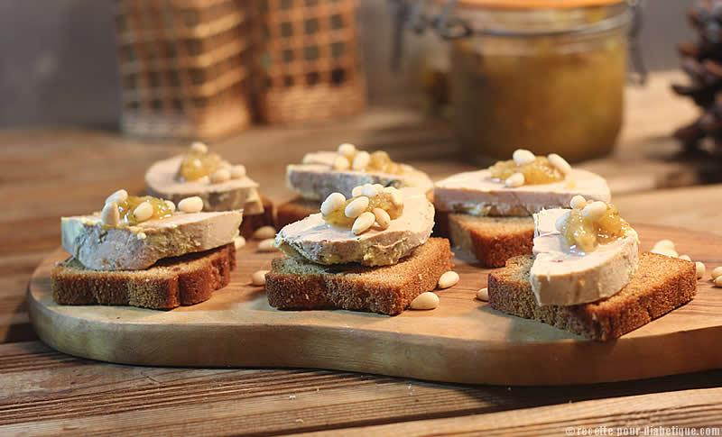

Confitures : nos recettes
 Mode Beauté Cuisine Déco Jardin Couple Mariage Maman Santé Société Stars Culture Horoscope Menu Principal Cuisine Recettes Desserts Classiques Astuces Produits Menus Actu & chefs FAQ Forum cuisine Cuisine S'inscrire Connexion Recettes Apéritifs Entrées Biscuits Burgers etc Légumes et gratins Pâtes et riz Petit déj et goûter Poissons et fruits de mer Recettes aux oeufs Viandes et volailles Salades Dernières recettes + Proposer une recette Desserts Gâteau au yaourt Crêpes Pâte a crêpes Gâteau au chocolat Tiramisu Fondant au chocolat Mousse au chocolat Pancakes Cookies Tarte aux pommes Gâteau Classiques Quiche lorraine Pizza Gratin dauphinois Kebab Blanquette de veau Sushi Gratin de courgettes Béchamel Pot au feu Ratatouille Couscous Astuces Conseils pâtisserie Cuisson des légumes Réussir ses viandes Produits Légumes Fruits Herbes et épices Menus Recettes de fêtes Repas quotidiens Menus spéciaux Magazine cuisine Actu & chefs Grands chefs Emissions culinaires Evénements et salons FAQ Forum cuisine Cuisiner Petit déjeuner et goûter Confiture et pâte à tartiner Recettes confitureConfiture : les recettes originales et simples à tartiner sans fin
Plaisir à tartiner, la confiture est surtout la meilleure façon de faire le plein de fruits d'été en hiver. Obtenue après réduction de fruits avec du sucre, cette confiserie n'est pas difficile à préparer. Le plus dur est de faire preuve de patience avant de pouvoir la déguster ! Dans l'idéal, il est recommandé d'utiliser une bassine à confiture en cuivre. Sa forme légèrement évasée et sa matière assurent une meilleure prise. Si vous n'en n'avez pas, une marmite fera l'affaire. Si vous utilisez des fruits pauvres en pectine tels que les cerises, framboises, la rhubarbe ou la poire, n'hésitez pas à en ajouter. L'ajout de jus de citron dans des préparations de confitures de coing, kiwi ou pêche empêchera la formation de cristaux de sucre. Filez vite au marché faire le plein de fruits et inspirez-vous de nos recettes pour préparer des confitures de fraises, framboises, prunes, d'abricots...
Comment faire ses confitures maison ?Confiture : Meilleures recettes
Pâte de coings : la meilleure recette Lemon curd : la meilleure recette Confiture de rhubarbe : la meilleure recette Confiture de lait Confiture de figues à la vanille Gelée de coings : la meilleure recette Confiture de fraises Confiture de mirabelles : la meilleure recette Confiture de coings Confiture d'oranges : la meilleure recette Confiture de tomates vertes Confiture de prunes rouges Confiture d'oranges gourmande Confiture de figues au citron Gelée de pommes Confiture de mûres : la meilleure recette Toutes vos recettes préféréesEn Vidéo
Confiture de framboises
Gelée de groseilles
Confiture de mangues
Toutes les vidéosAstuces : Confiture
Comment réussir une confiture d'abricots ? Comment faire des confitures sans pépins ? Comment rattraper une confiture trop liquide ? Quel sucre utiliser pour faire de la confiture ?Idées recettes : Confiture
Recettes de confiture de fraises Recettes de gelée de groseilleDerniers articles : Confiture
30 recettes de desserts à la confiture
La confiture quitte nos tartines pour venir se glisser dans nos desserts. Cette fois, on peut la déguster à la petite cuillère !
Recettes confiture Recettes confiture20 recettes de confitures originales
Marre des confitures traditionnelles aux fraises, framboises et autres abricots ? Misez donc sur des confitures originales épicées ou pas aux kiwis, potimarron, mangue et fleurs de sureau. Vous verrez, vous serez agréablement surpris !
Recettes confiture Recettes confiture55 recettes de confitures
Fraises, framboises, abricots... Les fruits de l'été se mettent en bocaux pour être dégustés tout au long de l'année. Sur des tartines, dans des gâteaux ou dans des crêpes, la confiture séduira tous les gourmands. Découvrez notre sélection de confitures.
Recettes confiture Recettes confiture36 recettes de confitures d'hiver
Les confitures ne sont pas que l'apanage des beaux jours ! Agrumes, bananes et mangues se mettent en pots pour égayer vos petits déjeuners d'hiver.
Recettes confiture Recettes d'hiver Recettes confitureTop 5 de vos confitures préférées
Qui de la fraise, la framboise, l'abricot ou l'orange remporte la faveur de vos tartines beurrées ? Découvrez en recettes, le classement de vos confitures préférées.
Recettes confiture Recettes confitureLeçon de confitures avec Christine Ferber
Elle crée des confitures pour Pierre Hermé, Alain Passard et d'autres grands noms de la gastronomie française. L'Alsacienne et fée des douceurs Christine Ferber nous livre tous ses secrets pour réussir nos confitures à la maison.
Recettes confiture Pierre Hermé Recettes confitureMarie-Claire Defontaine : Le sucre cristallisé est le meilleur pour de bonnes confitures
Marie-Claire Defontaine et son époux sont artisans-confituriers. Ils nous livrent quelques secrets de pro pour des confitures bonnes et surtout naturelles.
Petit déjeuner et goûter Recettes confiture Sucre Sucre Lire plusConfiture : Nouveautés
Confiture de mirabelles à l'anis étoilée Confiture de bananes et raisins au rhum Confiture de cerises : la meilleure recette Confiture de châtaignes Confiture de raisins Confiture de mirabelles, verveine, vanille et eau de vie de mirabelles Toutes les nouvelles recettes Vous n'avez pas trouvé votre bonheur ?Ajoutez la recette manquante
Déposer une recetteEffectuez une recherche sur le site
UNE NOUVELLE RECETTE ? Déposer une recetteNewsletters
Trouvez une recetteEn ce moment
Fraisier Les meilleurs oignons frits au paprika fumé Le meilleur Banh Mi Le Meilleur Pâtissier Les meilleurs pancakes Les meilleurs conchiglioni ricotta et pesto La meilleure confiture de cerises La meilleure courge spaghetti Le meilleur gâteau au fromage blanc Suivez-nous Toutes les recettes dans votre appli Qui sommes-nous ? Contact Publicité Recrutement Données personnelles Paramétrer les cookies Mentions légales © 2021 CCM Benchmark Actualités | Avis décès | Carte de voeux | Bricolage | Cinéma | Coiffure | Coloriages | Cuisine | Recette | CV | Déco | Dictionnaire | High-tech | Horoscope | Jeux en ligne | Pages blanches | Pages jaunes | Programme TV | Restaurant | Santé | SMIC | Test débit | Essai auto | Signification prénom | Etat des lieux | Divorce | Temps partiel | Succession | Prime à la cassePartager cet article
RSS